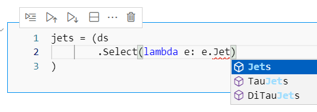

Using the ATLAS xAOD Typed Backend¶
Come here to learn:
How to setup your environment to access xAOD data in ATLAS (R21)
Collections from the xAOD that are available
Access methods, attributes, and decorations on the xAOD Event Data Model (EDM).
This tutorial book takes for granted that you:
Have access to an ATLAS xAOD ServiceX backend
Know the basics about how to use ServiceX to filter, select data, etc.
Basic knowledge of the ATLAS xAOD data model (at the level of a standard ATLAS tutorial)
The names of the xAOD collections you are interested in, etc.
Typed?¶
Normally, one does not think of Python as a typed language, like C++ or many other languages.
However, most Python code does not take advantage of this - a variable is always an int or a string
or similar. Type Hints are the Python way of expressing this. They are a fundamental part of the modern
Python language (see PEP 482, PEP 483,
PEP 484, etc.). Typing offers several advantages:
Various tools like
pylanceandmypycan spot errors before the code is runEditors, like
vscode, can give you suggestions motivated by the type definitions
Further, func_adl libraries can use this type information to configure the backend C++ on the fly:
New collections can be made accessible.
Objects that are returned by various methods can be properly interpreted by the
func_adlC++ backend.Arbitrary C++ code can be downloaded and executed as part of the query to ServiceX.
For example, here is a Jupyter notebook opened in visual studio code, showing the possible collections in an event:

And here the type checker pylance has flagged a bad method name, and a mouse-over shows more details on the error

Setup and config¶
Everything in this book can be executed and, at the time when the book was published, ran. For
this to work we need an up-to-date version of ServiceX running. We call this backend xaod_r21 for
the C++ ATLAS xAOD backend based on the Release 21 of the ATLAS analysis software. As per normal for ServiceX, xaod_r21 should
be defined in your servicex.yaml or .servicex file in your $HOME directory.
See the chapter on configuration for more information.